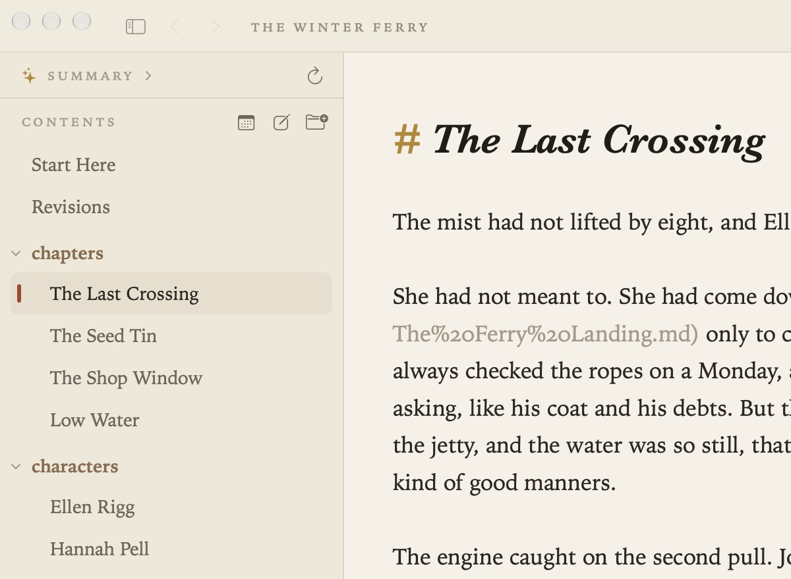

The Contents
The contents on the left list the notes and folders in your project. Notes are listed by their titles, with folders as small headings. View ▸ Hide Contents (⌃⌘S) hides it and shows it again.

Projects
A project is simply a folder of Markdown files.
- File ▸ Open Folder… (⇧⌘O) opens a folder, or drop a folder on Grasmere’s icon in the Dock. An empty folder is a fine place to start.
- File ▸ Open Recent Project lists the folders you’ve used. Grasmere reopens your last project where you left it.
- File ▸ New Window (⇧⌘N) opens a second project alongside.
- Project ▸ Ignored Folders… leaves out folders you don’t want in the contents, search or links, such as a folder of build output. You can also right-click a folder and choose Ignore This Folder.
Notes and folders
- File ▸ New Note (⌘N) and New Folder (⌥⌘N) make a new item, with its name ready to type. Where it goes depends on what you last did in the contents: inside a folder you’ve just clicked open, at the top level if you’ve just clicked a folder closed, and otherwise beside the open note.
- Double-click a note to rename it. The file name changes and links to it are updated.
- Drag a note onto a folder to move it. Links follow.
- ⌘1 (Go ▸ Select in Contents) moves the keyboard to the contents. Use the arrow keys to move, → and ← to open and close folders, Return to open a note, and type a few letters to jump to a name. Tab or esc goes back to the note.
Right-click a note for more: Rename, Show in Finder, Copy Relative Path, Copy Absolute Path, Open in Split View and Move to Trash.
Several notes at once
⌘-click or ⇧-click to pick several notes, then right-click to:
- Merge them into one note, with a section for each. Every link to the originals points at the right section, and the originals go to the Trash. Undo brings them back. (Also Project ▸ Merge Selected Notes….)
- Export them to Anki. See Publishing.
- Move them to the Trash (⌘⌫ does the same).
Deleted notes go to the Mac’s Trash, so you can get them back from there. Grasmere asks first before trashing a folder or more than five items.
The order of a folder
Without instructions, a folder lists its subfolders first, then its notes by name, as the Finder does. You can give any folder an order of its own.
By hand. Drag a note to the top or bottom half of another note’s row and it moves there. The order is kept in the folder’s index.md: the folder is listed in the order that file’s links reach its notes, and anything not linked follows. A folder without an index.md gets one the first time you drag an item into a new place, listing its items as they were. Right-click a folder and choose Edit Order of … (index.md) to open it, or Order … with index.md to make one straight away.
The index.md is an ordinary note, so it can say something about the folder too. This project’s Guides are in reading order this way.
By a rule. Right-click a folder and choose Sort Folder By ▸ Name, Date Created or Date Modified, each either way round. The rule is written into the folder’s index.md as an invisible comment, such as <!-- sort: modified, newest first -->, and the folder stays in that order as notes change. Drag an item and the rule becomes a list of links in the order shown (Sort Folder By ▸ Custom (Drag to Reorder)), with Undo in the bar if you didn’t mean it.
The top level can have a rule too: right-click the contents list itself, away from any row, and choose Sort Top Level By. That rule is kept in project.md’s Order section.
project.md
Every project has a project.md at its top, made when the project is first opened. It’s an ordinary note with a few sections Grasmere reads:
- Summary: a short overview of the project, shown at the top of the contents. Write it yourself, or let Project ▸ Generate Summary write it (see Ask Your Notes and AI). It’s also the home page when you build a website.
- Order: links to the top-level notes and folders, in the order the contents list them. Dragging at the top level rewrites it.
- Writing: word targets and the words written each day. See Writing Goals.
Anything else you write in project.md is left as it is.
Settings
In Settings ▸ Appearance:
- Name notes in the sidebar by Title (the first heading), File name, or File name with .md.
- Show images in the contents lists pictures alongside notes. Click one to look at it, double-click to rename it (links follow), or drag it into a note to link it.
- Show project.md in the contents and Show index.md in the contents list those files as notes. They’re hidden by default, and their order applies either way.